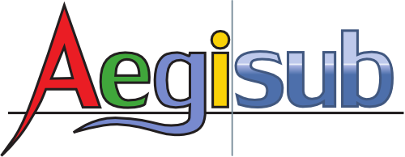

Aegisub Subtitle Generator¶
Web References¶
install version 3.2¶
http://forum.aegisub.org/viewtopic.php?f=10&t=66167
add-apt-repository ppa:djcj/aegisub
apt-get update
apt-get install aegisub
apt-get install aegisub-unstable
burn subtitles on video¶
https://trac.ffmpeg.org/wiki/HowToBurnSubtitlesIntoVideo
ffmpeg -i video.avi -vf "ass=subtitle.ass" out.avi